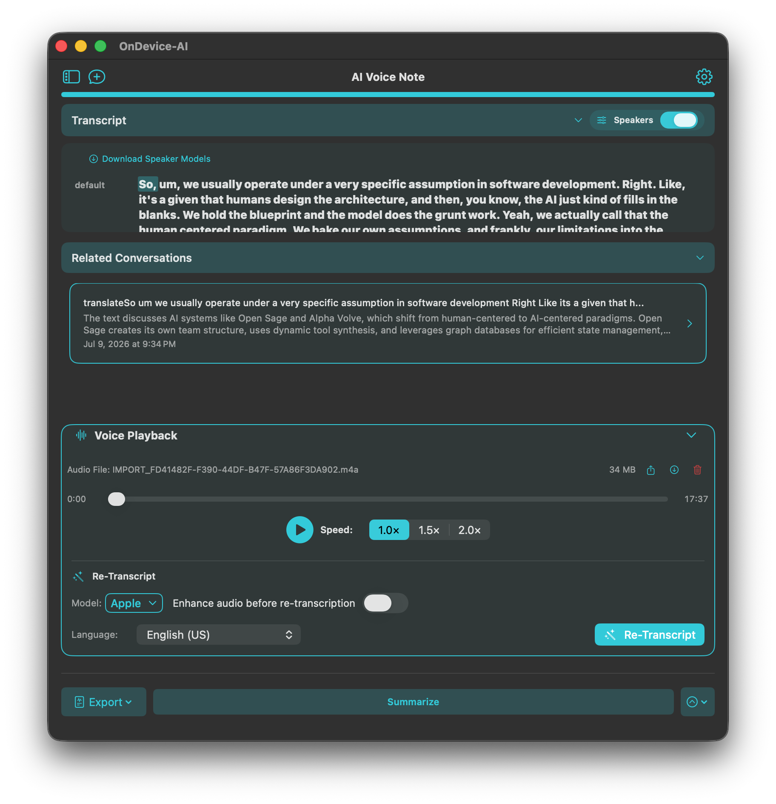
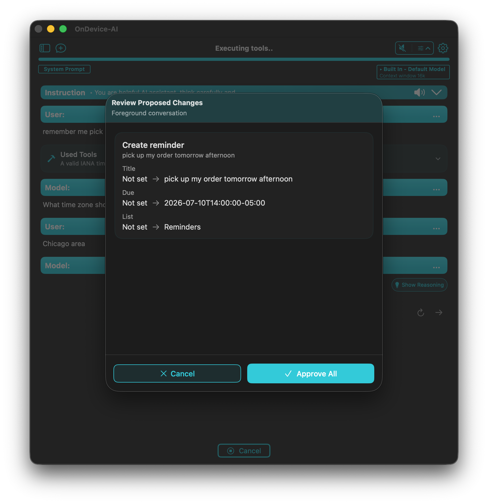

Let the conversation stay the conversation
During an interview, lecture, client call, or personal voice note, it is hard to listen well and write down everything that might matter later. A transcript gives you a way back. Speaker labels can make a multi-person recording easier to review, and playback lets you check the moment behind a note. Recording and transcription run on-device on iPhone, iPad, and Mac, so an interview or client call can be captured and turned into text without uploading the audio anywhere. Supported models include Apple STT, Whisper, and Parakeet.

Keep the context that will matter later
When a transcript belongs with a project, import its text into the appropriate Knowledge Library. The audio stays in Voice Notes, while the text becomes reusable project context. You can keep one transcript or bring in selected history when a library needs the background from several conversations.
This is useful after a meeting, but it is just as useful after a lecture, research interview, or a long personal note you do not want to lose.
Turn a decision into a reviewed next step
Calendar and Reminders tools can read the schedule or task information you have allowed, then propose a new event, reminder, or change. They do not silently act on a sentence in the transcript. You see the proposed change first and decide whether to approve it.
Calendar and Reminders access requires system permission. Keep these tools enabled only in the conversations where they are useful, especially when you work with personal information.

The next step stays yours
The goal is not to automate every decision from a recording. It is to make the useful parts easier to recover and easier to act on. Review the transcript, ask for the follow-up you want, and approve the change only when it looks right. We didn't want a recorder that acts on your behalf. We wanted one that hands you the useful parts and waits.
Frequently asked questions
Does On Device AI transcribe audio offline?
Yes. With a local model, recording and transcription run entirely on-device on iPhone, iPad, and Mac. No audio is uploaded anywhere.
Can it create Calendar events or Reminders automatically?
Calendar and Reminders tools can propose a new event or reminder from the transcript, but only after your review and approval. Nothing is created silently.
Can I import an existing audio file?
Yes. You can import an existing audio file into Voice Notes and transcribe it with any supported model, including Apple STT, Whisper, and Parakeet.